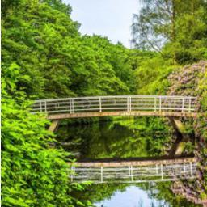
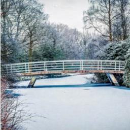
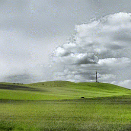
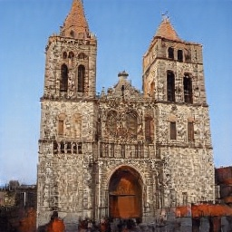
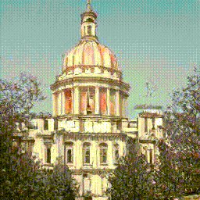
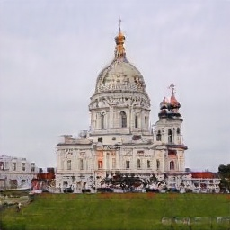
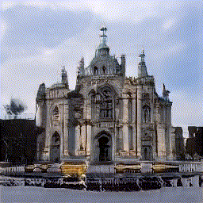
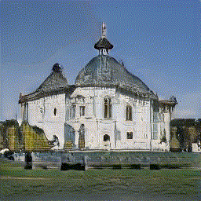
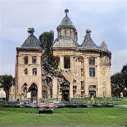

Unsupervised Image Transformation Learning via Generative Adversarial Networks
1 MIT CSAIL
2 The Chinese University of Hong Kong
2 The Chinese University of Hong Kong
| Input Pair | Transforming | |||||
|  |  |  |
 |
 | ||
| Season | ||||||
|  |  |
 |  |
 |
||
| Cloud | ||||||
|  |  |  |  | |||
| Shape | ||||||
@article{zha2021unsupervised,
title = {Unsupervised Image Transformation Learning via Generative Adversarial Networks},
author = {Zha, Kaiwen and Shen, Yujun and Zhou, Bolei},
journal = {arXiv preprint arXiv:2103.07751},
year = {2021}
}

Comment: Defines 40 transient attributes and proposes an image editing method that can adjust the attributes of a scene based on regressors trained on on labeled data.